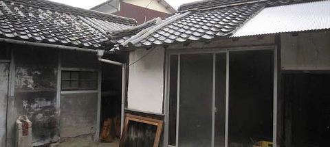
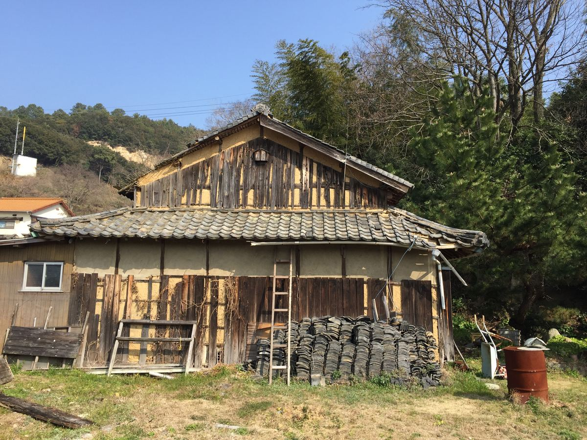
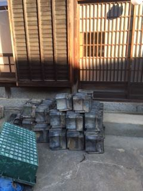
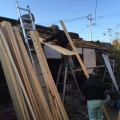
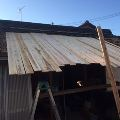
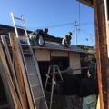
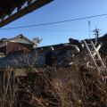
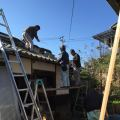
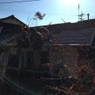
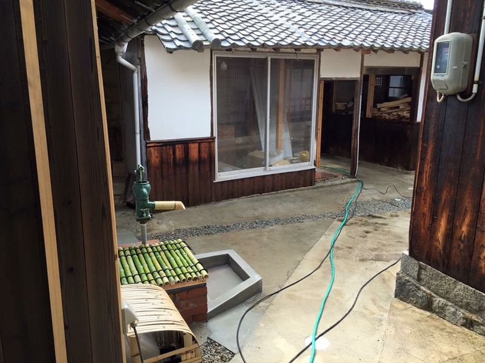

古民家再生の記録
長屋門の屋根と瓦
長屋門は１／３が波板になっていました。
佐島の宮ノ浦（みやんな）付近に焼き物には適した土があり、蛸壺作りから転身した瓦屋さんがいたため、弓削や佐島には比較的早い頃から瓦屋根が普及したそうです。瓦屋さんも先代で辞められましたが、今でも島のあちこちで佐島産の瓦が使われています。

汐見の長屋門も、出来れば島の古瓦で再生出来ないかと伝手を探していました。
ある日、友人と弓削島を歩いていたところ、空き家の前に大量の古瓦が！

長屋門の修繕は、弓削のベテラン左官の岩上さんと大工の地元さんにお願いしました。








また一つ家が甦りました。
ご協力頂いた皆さま、有難うございました。